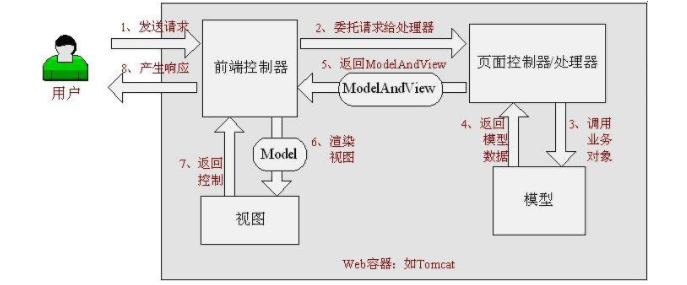

SpringMVC SpringMVC概况 1.1 什么是MVC
MVC是模型(Model)、视图(View)、控制器(Controller)的简写，是一种软件设计规范。
是将业务逻辑、数据、显示分离的方法来组织代码。
MVC主要作用是降低了视图与业务逻辑间的双向偶合 。
MVC不是一种设计模式，MVC是一种架构模式 。当然不同的MVC存在差异。
Model（模型）： 数据模型，提供要展示的数据，因此包含数据和行为，可以认为是领域模型或JavaBean组件（包含数据和行为），不过现在一般都分离开来：Value Object（数据Dao） 和 服务层（行为Service）。也就是模型提供了模型数据查询和模型数据的状态更新等功能，包括数据和业务。
View（视图）： 负责进行模型的展示，一般就是我们见到的用户界面，客户想看到的东西。
Controller（控制器）： 接收用户请求，委托给模型进行处理（状态改变），处理完毕后把返回的模型数据返回给视图，由视图负责展示。 也就是说控制器做了个调度员的工作。
最典型的MVC就是JSP + servlet + javabean的模式。
1.2 Model1时代
在web早期的开发中，通常采用的都是Model1。
Model1中，主要分为两层，视图层和模型层。
Model1优点：架构简单，比较适合小型项目开发；
Model1缺点：JSP职责不单一，职责过重，不便于维护；
1.3 Model2时代 Model2把一个项目分成三部分，包括视图、控制、模型。
用户发请求
Servlet接收请求数据，并调用对应的业务逻辑方法
业务处理完毕，返回更新后的数据给servlet
servlet转向到JSP，由JSP来渲染页面
响应给前端更新后的页面
职责分析：
Controller：控制器
Model：模型
View：视图
Model2这样不仅提高的代码的复用率与项目的扩展性，且大大降低了项目的维护成本。Model 1模式的实现比较简单，适用于快速开发小规模项目，Model1中JSP页面身兼View和Controller两种角色，将控制逻辑和表现逻辑混杂在一起，从而导致代码的重用性非常低，增加了应用的扩展性和维护的难度。Model2消除了Model1的缺点。
1.4 回顾Servlet
新建一个Maven工程项目当做父工程！ 并且导入pom依赖
1 2 3 4 5 6 7 8 9 10 11 12 13 14 15 16 17 18 19 20 21 22 23 24 25 26 27 28 29 <dependencies > <dependency > <groupId > junit</groupId > <artifactId > junit</artifactId > <version > 4.12</version > </dependency > <dependency > <groupId > org.springframework</groupId > <artifactId > spring-webmvc</artifactId > <version > 5.3.15</version > </dependency > <dependency > <groupId > javax.servlet</groupId > <artifactId > servlet-api</artifactId > <version > 2.5</version > </dependency > <dependency > <groupId > javax.servlet.jsp</groupId > <artifactId > jsp-api</artifactId > <version > 2.2</version > </dependency > <dependency > <groupId > javax.servlet</groupId > <artifactId > jstl</artifactId > <version > 1.2</version > </dependency > </dependencies >
1 2 3 4 5 6 7 8 9 10 11 12 <dependencies > <dependency > <groupId > javax.servlet</groupId > <artifactId > servlet-api</artifactId > <version > 2.5</version > </dependency > <dependency > <groupId > javax.servlet.jsp</groupId > <artifactId > jsp-api</artifactId > <version > 2.2</version > </dependency > </dependencies >
1 2 3 4 5 6 7 8 9 10 11 12 13 14 15 16 17 18 19 20 21 22 public class HelloServlet extends HttpServlet @Override protected void doGet (HttpServletRequest req, HttpServletResponse resp) throws ServletException, IOException "method" );if (method.equals("add" )){"msg" ,"执行了add方法" );if (method.equals("delete" )){"msg" ,"执行了delete方法" );"/WEB-INF/jsp/test.jsp" ).forward(req,resp);@Override protected void doPost (HttpServletRequest req, HttpServletResponse resp) throws ServletException, IOException
编写Hello.jsp，在WEB-INF目录下新建一个jsp的文件夹，新建hello.jsp
1 2 3 4 5 6 7 8 9 <%@ page contentType="text/html;charset=UTF-8" language="java" %>
1 2 3 4 5 6 7 8 <servlet>class >edu .nyist .servlet .HelloServlet </servlet -class ></servlet > <servlet -mapping > <servlet -name >Hello </servlet -name > <url -pattern >/Hello </url -pattern > </servlet -mapping >
配置Tomcat，并启动测试
localhost:8080/user?method=add
localhost:8080/user?method=delete
MVC框架要做哪些事情
将url映射到java类或java类的方法
封装用户提交的数据
处理请求—调用相关的业务处理—封装响应数据
将响应的数据进行渲染 . jsp / html 等表示层数据
说明：
常见的服务器端MVC框架有：Struts、Spring MVC、ASP.NET MVC、Zend Framework、JSF；常见前端MVC框架：vue、angularjs、react、backbone；由MVC演化出了另外一些模式如：MVP、MVVM 等
2、什么是SpringMVC 2.1 概述
==Spring MVC是Spring Framework的一部分，是基于Java实现MVC的轻量级Web框架。==
查看官方文档：https://docs.spring.io/spring/docs/5.2.0.RELEASE/spring-framework-reference/web.html#spring-web
我们为什么要学习SpringMVC呢?
Spring MVC的特点：
轻量级，简单易学
高效 , 基于请求响应的MVC框架
与Spring兼容性好，无缝结合
约定优于配置
功能强大：RESTful、数据验证、格式化、本地化、主题等
简洁灵活
Spring的web框架围绕DispatcherServlet [ 调度Servlet ] 设计。
DispatcherServlet的作用是将请求分发到不同的处理器。从Spring 2.5开始，使用Java 5或者以上版本的用户可以采用基于注解形式进行开发，十分简洁；
正因为SpringMVC好 , 简单 , 便捷 , 易学 , 天生和Spring无缝集成(使用SpringIoC和Aop) , 使用约定优于配置 . 能够进行简单的junit测试 . 支持Restful风格 .异常处理 , 本地化 , 国际化 , 数据验证 , 类型转换 , 拦截器 等等……所以我们要学习 .
最重要的一点还是用的人多 , 使用的公司多 .
2.2 中心控制器 Spring的web框架围绕DispatcherServlet设计。 DispatcherServlet的作用是将请求分发到不同的处理器。从Spring 2.5开始，使用Java 5或者以上版本的用户可以采用基于注解的controller声明方式。
Spring MVC框架像许多其他MVC框架一样, 以请求为驱动 , 围绕一个中心Servlet分派请求及提供其他功能 ，**DispatcherServlet是一个实际的Servlet (它继承自HttpServlet 基类)**。
当发起请求时被前置的控制器拦截到请求，根据请求参数生成代理请求，找到请求对应的实际控制器，控制器处理请求，创建数据模型，访问数据库，将模型响应给中心控制器，控制器使用模型与视图渲染视图结果，将结果返回给中心控制器，再将结果返回给请求者。

2.3 SpringMVC执行原理
图为SpringMVC的一个较完整的流程图，实线表示SpringMVC框架提供的技术，不需要开发者实现，虚线表示需要开发者实现。
简要分析执行流程
DispatcherServlet表示前置控制器，是整个SpringMVC的控制中心。用户发出请求，DispatcherServlet接收请求并拦截请求。
我们假设请求的url为 : http://localhost:8080/SpringMVC/hello
如上url拆分成三部分：
http://localhost:8080服务器域名
SpringMVC部署在服务器上的web站点
hello表示控制器
通过分析，如上url表示为：请求位于服务器localhost:8080上的SpringMVC站点的hello控制器。
HandlerMapping为处理器映射。DispatcherServlet调用HandlerMapping,HandlerMapping根据请求url查找Handler。
HandlerExecution表示具体的Handler,其主要作用是根据url查找控制器，如上url被查找控制器为：hello。
HandlerExecution将解析后的信息传递给DispatcherServlet,如解析控制器映射等。
HandlerAdapter表示处理器适配器，其按照特定的规则去执行Handler。
Handler让具体的Controller执行。
Controller将具体的执行信息返回给HandlerAdapter,如ModelAndView。
HandlerAdapter将视图逻辑名或模型传递给DispatcherServlet。
DispatcherServlet调用视图解析器(ViewResolver)来解析HandlerAdapter传递的逻辑视图名。
视图解析器将解析的逻辑视图名传给DispatcherServlet。
DispatcherServlet根据视图解析器解析的视图结果，调用具体的视图。
最终视图呈现给用户。
3、HelloSpring 3.1 配置版
新建一个Moudle ， springmvc-02-hello ， 添加web的支持！
确定导入了SpringMVC 的依赖！
配置web.xml ， 注册DispatcherServlet
1 2 3 4 5 6 7 8 9 10 11 12 13 14 15 16 17 18 19 20 21 22 23 24 25 26 <?xml version="1.0" encoding="UTF-8"?> <web-app xmlns ="http://xmlns.jcp.org/xml/ns/javaee" xmlns:xsi ="http://www.w3.org/2001/XMLSchema-instance" xsi:schemaLocation ="http://xmlns.jcp.org/xml/ns/javaee http://xmlns.jcp.org/xml/ns/javaee/web-app_4_0.xsd" version ="4.0" > <servlet > <servlet-name > springmvc</servlet-name > <servlet-class > org.springframework.web.servlet.DispatcherServlet</servlet-class > <init-param > <param-name > contextConfigLocation</param-name > <param-value > classpath:springmvc-servlet.xml</param-value > </init-param > <load-on-startup > 1</load-on-startup > </servlet > <servlet-mapping > <servlet-name > springmvc</servlet-name > <url-pattern > /</url-pattern > </servlet-mapping > </web-app >
编写SpringMVC 的 配置文件！名称：springmvc-servlet.xml : [servletname]-servlet.xml
说明，这里的名称要求是按照官方来的
1 2 3 4 5 6 7 <?xml version="1.0" encoding="UTF-8"?> <beans xmlns ="http://www.springframework.org/schema/beans" xmlns:xsi ="http://www.w3.org/2001/XMLSchema-instance" xsi:schemaLocation ="http://www.springframework.org/schema/beans http://www.springframework.org/schema/beans/spring-beans.xsd" ></beans >
添加 处理映射器
1 <bean class ="org.springframework.web.servlet.handler.BeanNameUrlHandlerMapping" />
添加 处理器适配器
1 <bean class ="org.springframework.web.servlet.mvc.SimpleControllerHandlerAdapter" />
添加 视图解析器
1 2 3 4 5 6 <bean class ="org.springframework.web.servlet.view.InternalResourceViewResolver" id ="InternalResourceViewResolver" > <property name ="prefix" value ="/WEB-INF/jsp/" /> <property name ="suffix" value =".jsp" /> </bean >
编写我们要操作业务Controller ，要么实现Controller接口，要么增加注解；需要返回一个ModelAndView，装数据，封视图；
1 2 3 4 5 6 7 8 9 10 11 12 13 14 15 16 17 18 import org.springframework.web.servlet.ModelAndView;import org.springframework.web.servlet.mvc.Controller;import javax.servlet.http.HttpServletRequest;import javax.servlet.http.HttpServletResponse;public class HelloController implements Controller @Override public ModelAndView handleRequest (HttpServletRequest request, HttpServletResponse response) throws Exception new ModelAndView();"msg" ,"HelloSpringMVC!" );"hello" ); return mv;
将自己的类交给SpringIOC容器，注册bean
1 2 <bean id ="/hello" class ="edu.nyist.controller.HelloController" />
写要跳转的jsp页面，显示ModelandView存放的数据，以及我们的正常页面；
1 2 3 4 5 6 7 8 9 10 <%@ page contentType="text/html;charset=UTF-8" language="java" %>
测试成果
可能遇到的问题：访问出现404，排查步骤：
查看控制台输出，看一下是不是缺少了什么jar包。
如果jar包存在，显示无法输出，就在IDEA的项目发布中，添加lib依赖！
重启Tomcat 即可解决！
添加项目依赖主要是在IDEA中，找到项目结构，打开左侧的工作选项，在WEB-INF文件夹里面新建lib目录，并且点击上方加号，将所有的jar包导入到lib目录中
以上是一种情况，对于学习没有看清楚狂神的视频的，有可能导入jar包之后仍然为404，主要是因为狂神在WEB-INF文件夹里面新建了一个jsp文件，所以在看视频的时候一定要看清楚，不要错过任何一个细节
3.2 注解版
新建一个Moudle，SpringMVC03-Annotation 。添加web支持！
建立包结构 edu.nyist.controller
由于Maven可能存在资源过滤的问题，我们将配置完善
1 2 3 4 5 6 7 8 9 10 11 12 13 14 15 16 17 18 19 20 <build > <resources > <resource > <directory > src/main/java</directory > <includes > <include > **/*.properties</include > <include > **/*.xml</include > </includes > <filtering > false</filtering > </resource > <resource > <directory > src/main/resources</directory > <includes > <include > **/*.properties</include > <include > **/*.xml</include > </includes > <filtering > false</filtering > </resource > </resources > </build >
注意点：
1 2 3 4 5 6 7 8 9 10 11 12 13 14 15 16 17 18 19 20 21 22 23 24 <?xml version="1.0" encoding="UTF-8"?> <web-app xmlns ="http://xmlns.jcp.org/xml/ns/javaee" xmlns:xsi ="http://www.w3.org/2001/XMLSchema-instance" xsi:schemaLocation ="http://xmlns.jcp.org/xml/ns/javaee http://xmlns.jcp.org/xml/ns/javaee/web-app_4_0.xsd" version ="4.0" > <servlet > <servlet-name > SpringMVC</servlet-name > <servlet-class > org.springframework.web.servlet.DispatcherServlet</servlet-class > <init-param > <param-name > contextConfigLocation</param-name > <param-value > classpath:springmvc-servlet.xml</param-value > </init-param > <load-on-startup > 1</load-on-startup > </servlet > <servlet-mapping > <servlet-name > SpringMVC</servlet-name > <url-pattern > /</url-pattern > </servlet-mapping > </web-app >
在前面的代码块中已经讲过了一些/和/*的区别，现在再来解释一下
/ 和 /* 的区别：
添加Spring MVC配置文件
让IOC的注解生效
静态资源过滤 ：HTML . JS . CSS . 图片 ， 视频 …..
MVC的注解驱动
配置视图解析器
在resource目录下添加springmvc-servlet.xml配置文件，配置的形式与Spring容器配置基本类似，为了支持基于注解的IOC，设置了自动扫描包的功能，具体配置信息如下：
1 2 3 4 5 6 7 8 9 10 11 12 13 14 15 16 17 18 19 20 21 22 23 24 25 26 27 28 29 30 31 32 33 34 35 36 37 38 <?xml version="1.0" encoding="UTF-8"?> <beans xmlns ="http://www.springframework.org/schema/beans" xmlns:xsi ="http://www.w3.org/2001/XMLSchema-instance" xmlns:context ="http://www.springframework.org/schema/context" xmlns:mvc ="http://www.springframework.org/schema/mvc" xsi:schemaLocation ="http://www.springframework.org/schema/beans http://www.springframework.org/schema/beans/spring-beans.xsd http://www.springframework.org/schema/context https://www.springframework.org/schema/context/spring-context.xsd http://www.springframework.org/schema/mvc https://www.springframework.org/schema/mvc/spring-mvc.xsd" ><context:component-scan base-package ="edu.nyisy.controller" /> <mvc:default-servlet-handler /> <mvc:annotation-driven /> <bean class ="org.springframework.web.servlet.view.InternalResourceViewResolver" id ="internalResourceViewResolver" > <property name ="prefix" value ="/WEB-INF/jsp/" /> <property name ="suffix" value =".jsp" /> </bean > </beans >
在视图解析器中我们把所有的视图都存放在/WEB-INF/目录下，这样可以保证视图安全，因为这个目录下的文件，客户端不能直接访问。
创建Controller
编写一个Java控制类： com.kuang.controller.HelloController , 注意编码规范
1 2 3 4 5 6 7 8 9 10 11 12 13 14 15 16 17 18 19 20 21 22 23 package edu.nyisy.controller;import org.springframework.stereotype.Controller;import org.springframework.ui.Model;import org.springframework.web.bind.annotation.RequestMapping;@Controller public class HekkoController @RequestMapping("/hello") public String hello (Model model) "msg" ,"Hello,SpringMVCAnnotation!" );return "hello" ;
@Controller是为了让Spring IOC容器初始化时自动扫描到；
@RequestMapping是为了映射请求路径，这里因为类与方法上都有映射所以访问时应该是/HelloController/hello；
方法中声明Model类型的参数是为了把Action中的数据带到视图中；
方法返回的结果是视图的名称hello，加上配置文件中的前后缀变成WEB-INF/jsp/hello .jsp。
创建视图层
在WEB-INF/ jsp目录中创建hello.jsp ， 视图可以直接取出并展示从Controller带回的信息；
可以通过EL表示取出Model中存放的值，或者对象；
1 2 3 4 5 6 7 8 9 10 <%@ page contentType="text/html;charset=UTF-8" language="java" %>
配置Tomcat运行
配置Tomcat ， 开启服务器 ， 访问 对应的请求路径！
在这里面需要注意，创建完model3的时候，依然要在项目结构中对jar包进行打包新创一个文件夹
3.3 小结 实现步骤其实非常的简单：
新建一个web项目
导入相关jar包
编写web.xml , 注册DispatcherServlet
编写springmvc配置文件
接下来就是去创建对应的控制类 , controller
最后完善前端视图和controller之间的对应
测试运行调试.
使用springMVC必须配置的三大件：
处理器映射器、处理器适配器、视图解析器
通常，我们只需要手动配置视图解析器 ，而处理器映射器 和处理器适配器 只需要开启注解驱动 即可，而省去了大段的xml配置
4、Controller 及 RestFul 4.1 控制器Controller
控制器复杂提供访问应用程序的行为，通常通过接口定义或注解定义两种方法实现。
控制器负责解析用户的请求并将其转换为一个模型。
在Spring MVC中一个控制器类可以包含多个方法
在Spring MVC中，对于Controller的配置方式有很多种
我们来看看有哪些方式可以实现：
4.2 实现Controller接口 Controller是一个接口，在org.springframework.web.servlet.mvc包下，接口中只有一个方法；
1 2 3 4 5 public interface Controller ModelAndView handleRequest (HttpServletRequest var1, HttpServletResponse var2) throws Exception ;
测试
新建一个Moudle，springmvc-04-controller 。
删掉HelloController
mvc的配置文件只留下 视图解析器！
编写一个Controller类，ControllerTest1
1 2 3 4 5 6 7 8 9 10 public class ControllerTest1 implements Controller @Override public ModelAndView handleRequest (HttpServletRequest request, HttpServletResponse response) throws Exception new ModelAndView();"msg" ,"ControllerTest" );"test" );return modelAndView;
编写完毕后，去Spring配置文件中注册请求的bean；name对应请求路径，class对应处理请求的类
1 <bean name ="/t1" class ="edu.nyist.controller.ControllerTest1" />
编写前端test.jsp，注意在WEB-INF/jsp目录下编写，对应我们的视图解析器
1 2 3 4 5 6 7 8 9 10 <%@ page contentType="text/html;charset=UTF-8" language="java" %>
配置Tomcat运行测试，我这里没有项目发布名配置的就是一个 / ，所以请求不用加项目名，OK！
说明：
实现接口Controller定义控制器是较老的办法
缺点是：一个控制器中只有一个方法，如果要多个方法则需要定义多个Controller；定义的方式比较麻烦；
4.3 使用注解@Controller
@Controller注解类型用于声明Spring类的实例是一个控制器（在讲IOC时还提到了另外3个注解）；
Spring可以使用扫描机制来找到应用程序中所有基于注解的控制器类，为了保证Spring能找到你的控制器，需要在配置文件中声明组件扫描。
1 2 <context:component-scan base-package ="edu.nyist.controller" />
增加一个ControllerTest2类，使用注解实现；
1 2 3 4 5 6 7 8 9 @Controller public class ControllerTest2 @RequestMapping("/t2") public String test1 (Model model) "msg" ,"ControllerTest2" );return "test" ;
运行tomcat测试
可以发现，我们的两个请求都可以指向一个视图，但是页面结果的结果是不一样的，从这里可以看出视图是被复用的，而控制器与视图之间是弱偶合关系。
4.4 RequestMapping
@RequestMapping注解用于映射url到控制器类或一个特定的处理程序方法。可用于类或方法上。用于类上，表示类中的所有响应请求的方法都是以该地址作为父路径。
为了测试结论更加准确，我们可以加上一个项目名测试 myweb
只注解在方法上面
1 2 3 4 5 6 @Controllerpublic class TestController @RequestMapping("/h1") public String test () return "test" ;
访问路径：http://localhost:8080 / 项目名 / h1
同时注解类与方法
1 2 3 4 5 6 7 8 @Controller @RequestMapping("/admin") public class TestController @RequestMapping("/h1") public String test () return "test" ;
访问路径：http://localhost:8080 / 项目名/ admin /h1 , 需要先指定类的路径再指定方法的路径；
4.5 RestFul 风格 概念
功能 POST、DELETE、PUT、GET，使用不同方法对资源进行操作。
传统方式操作资源 ：通过不同的参数来实现不同的效果！方法单一，post 和 get
http://127.0.0.1/item/queryItem.action?id=1 查询,GEThttp://127.0.0.1/item/saveItem.action 新增,POSThttp://127.0.0.1/item/updateItem.action 更新,POSThttp://127.0.0.1/item/deleteItem.action?id=1 删除,GET或POST
使用RESTful操作资源 ： 可以通过不同的请求方式来实现不同的效果！如下：请求地址一样，但是功能可以不同！
http://127.0.0.1/item/1 查询,GEThttp://127.0.0.1/item 新增,POSThttp://127.0.0.1/item 更新,PUThttp://127.0.0.1/item/1 删除,DELETE
学习测试
在新建一个类 RestFulController
1 2 @Controller public class RestFulController
在Spring MVC中可以使用 @PathVariable 注解，让方法参数的值对应绑定到一个URI模板变量上。
1 2 3 4 5 6 7 8 9 10 11 12 @Controller public class RestFulController @RequestMapping("/commit/{p1}/{p2}") public String index (@PathVariable int p1, @PathVariable int p2, Model model) int result = p1+p2;"msg" , "结果：" +result);return "test" ;
我们来测试请求查看下
思考：使用路径变量的好处？
使路径变得更加简洁；
获得参数更加方便，框架会自动进行类型转换。
通过路径变量的类型可以约束访问参数，如果类型不一样，则访问不到对应的请求方法，如这里访问是的路径是/commit/1/a，则路径与方法不匹配，而不会是参数转换失败。
我们来修改下对应的参数类型，再次测试
1 2 3 4 5 6 7 8 9 @RequestMapping("/commit/{p1}/{p2}") public String index (@PathVariable int p1, @PathVariable String p2, Model model) "msg" , "结果：" +result);return "test" ;
使用method属性指定请求类型
用于约束请求的类型，可以收窄请求范围。指定请求谓词的类型如GET, POST, HEAD, OPTIONS, PUT, PATCH, DELETE, TRACE等
我们来测试一下：
如果将POST修改为GET则正常了；
1 2 3 4 5 6 @RequestMapping(value = "/hello",method = {RequestMethod.GET}) public String index2 (Model model) "msg" , "hello!" );return "test" ;
小结：
Spring MVC 的 @RequestMapping 注解能够处理 HTTP 请求的方法, 比如 GET, PUT, POST, DELETE 以及 PATCH。
所有的地址栏请求默认都会是 HTTP GET 类型的。
方法级别的注解变体有如下几个： 组合注解
1 2 3 4 5 @GetMapping @PostMapping @PutMapping @DeleteMapping @PatchMapping
@GetMapping 是一个组合注解
它所扮演的是 @RequestMapping(method =RequestMethod.GET) 的一个快捷方式。
平时使用的会比较多！
5、结果跳转方式 5.1 ModelAndView 设置ModelAndView对象 , 根据view的名称 , 和视图解析器跳到指定的页面 .
页面 : {视图解析器前缀} + viewName +{视图解析器后缀}
1 2 3 4 5 6 7 8 9 <bean class ="org.springframework.web.servlet.view.InternalResourceViewResolver" id ="internalResourceViewResolver" > <property name ="prefix" value ="/WEB-INF/jsp/" /> <property name ="suffix" value =".jsp" /> </bean >
对应的controller类
1 2 3 4 5 6 7 8 9 public class ControllerTest1 implements Controller public ModelAndView handleRequest (HttpServletRequest httpServletRequest, HttpServletResponse httpServletResponse) throws Exception new ModelAndView();"msg" ,"ControllerTest1" );"test" );return mv;
这种跳转方式就是通过实现Controller的接口类，来通过new一个视图对象，并且将跳转的页面setViewName出来，再通过视图解析器来添加前缀和后缀
5.2 ServletAPI 通过设置ServletAPI , 不需要视图解析器
通过HttpServletResponse进行输出
通过HttpServletResponse实现重定向
通过HttpServletResponse实现转发
1 2 3 4 5 6 7 8 9 10 11 12 13 14 15 16 17 18 19 20 @Controller public class ResultGo @RequestMapping("/result/t1") public void test1 (HttpServletRequest req, HttpServletResponse rsp) throws IOException "Hello,Spring BY servlet API" ); @RequestMapping("/result/t2") public void test2 (HttpServletRequest req, HttpServletResponse rsp) throws IOException "/index.jsp" ); @RequestMapping("/result/t3") public void test3 (HttpServletRequest req, HttpServletResponse rsp) throws Exception "msg" ,"/result/t3" );"/WEB-INF/jsp/test.jsp" ).forward(req,rsp);
5.3 SpringMVC 通过SpringMVC来实现转发和重定向 - 无需视图解析器；
测试前，需要将视图解析器注释掉
1 2 3 4 5 6 7 8 9 10 11 12 13 14 15 16 17 18 19 20 21 @Controller public class ResultSpringMVC @RequestMapping("/rsm/t1") public String test1 () return "/index.jsp" ;@RequestMapping("/rsm/t2") public String test2 () return "forward:/index.jsp" ;@RequestMapping("/rsm/t3") public String test3 () return "redirect:/index.jsp" ;
通过SpringMVC来实现转发和重定向 - 有视图解析器；
重定向 , 不需要视图解析器 , 本质就是重新请求一个新地方嘛 , 所以注意路径问题.
可以重定向到另外一个请求实现 .
1 2 3 4 5 6 7 8 9 10 11 12 13 14 15 @Controller public class ResultSpringMVC2 @RequestMapping("/rsm2/t1") public String test1 () return "test" ;@RequestMapping("/rsm2/t2") public String test2 () return "redirect:/index.jsp" ;
6、数据处理 6.1 处理提交数据 1、提交的域名称和处理方法的参数名一致
提交数据 : http://localhost:8080/hello?name=zhangzhang
处理方法 :
1 2 3 4 5 @RequestMapping("/hello") public String hello (String name) return "hello" ;
后台输出 : zhangzhang
2 、提交的域名称和处理方法的参数名不一致
提交数据 : http://localhost:8080/hello?username=zhangzhang
处理方法 :
1 2 3 4 5 6 @RequestMapping("/hello") public String hello (@RequestParam("username") String name) return "hello" ;
后台输出 : zhangzhang
3、提交的是一个对象
要求提交的表单域和对象的属性名一致 , 参数使用对象即可
实体类
1 2 3 4 5 6 7 8 public class User private int id;private String name;private int age;
提交数据 : http://localhost:8080/mvc04/user?name=zhangzhang&id=1&age=15
处理方法 :
1 2 3 4 5 @RequestMapping("/user") public String user (User user) return "hello" ;
后台输出 : User { id=1, name=’zhangzhang’, age=15 }
说明：如果使用对象的话，前端传递的参数名和对象名必须一致，否则就是null。
6.2 数据显示到前端 第一种 : 通过ModelAndView
我们前面一直都是如此 . 就不过多解释
1 2 3 4 5 6 7 8 9 public class ControllerTest1 implements Controller public ModelAndView handleRequest (HttpServletRequest httpServletRequest, HttpServletResponse httpServletResponse) throws Exception new ModelAndView();"msg" ,"ControllerTest1" );"test" );return mv;
第二种 : 通过ModelMap
ModelMap
1 2 3 4 5 6 7 8 @RequestMapping("/hello") public String hello (@RequestParam("username") String name, ModelMap model) "name" ,name);return "hello" ;
第三种 : 通过Model
Model
1 2 3 4 5 6 7 8 @RequestMapping("/ct2/hello") public String hello (@RequestParam("username") String name, Model model) "msg" ,name);return "test" ;
1 2 3 4 5 6 7 8 9 10 11 12 13 14 15 16 17 18 19 20 21 22 23 24 25 26 27 28 @Controller @RequestMapping("/user") public class UserController @GetMapping("/t1") public String test1 (@RequestParam("username") String name, Model model) "接收到的前端的数据为：" + name );"msg" ,name);return "test" ;@GetMapping("/t2") public String test2 (User user) return "test" ;
6.3 对比 就对于新手而言简单来说使用区别就是：
1 2 3 Model 只有寥寥几个方法只适合用于储存数据，简化了新手对于Model对象的操作和理解；
当然更多的以后开发考虑的更多的是性能和优化，就不能单单仅限于此的了解。
6.4 乱码问题 测试步骤：
我们可以在首页编写一个提交的表单
1 2 3 4 <form action="/e/t" method="post" >"text" name="name" >"submit" >
后台编写对应的处理类
1 2 3 4 5 6 7 8 @Controller public class Encoding @RequestMapping("/e/t") public String test (Model model,String name) "msg" ,name); return "test" ;
输入中文测试，发现乱码
不得不说，乱码问题是在我们开发中十分常见的问题，也是让我们比较头大的问题！
按照以往的步骤，会通过过滤器来解决，现在展示一下过滤器的解决方式
1 2 3 4 5 6 7 8 9 10 11 12 13 14 15 16 17 18 19 20 21 public class EncodingFilter implements Filter @Override public void init (FilterConfig filterConfig) throws ServletException @Override public void doFilter (ServletRequest request, ServletResponse response, FilterChain chain) throws IOException, ServletException "utf-8" );"utf-8" );@Override public void destroy ()
1 2 3 4 5 6 7 8 <filter > <filter-name > encoding</filter-name > <filter-class > edu.nyist.filter.EncodingFilter</filter-class > </filter > <filter-mapping > <filter-name > encoding</filter-name > <url-pattern > /*</url-pattern > </filter-mapping >
以前乱码问题通过过滤器解决 , 而SpringMVC给我们提供了一个过滤器 , 可以在web.xml中配置 .
修改了xml文件需要重启服务器！
1 2 3 4 5 6 7 8 9 10 11 12 <filter > <filter-name > encoding</filter-name > <filter-class > org.springframework.web.filter.CharacterEncodingFilter</filter-class > <init-param > <param-name > encoding</param-name > <param-value > utf-8</param-value > </init-param > </filter > <filter-mapping > <filter-name > encoding</filter-name > <url-pattern > /*</url-pattern > </filter-mapping >
但是我们发现 , 有些极端情况下.这个过滤器对get的支持不好 .
处理方法 :
修改tomcat配置文件 ： 设置编码！
1 2 3 <Connector URIEncoding ="utf-8" port ="8080" protocol ="HTTP/1.1" connectionTimeout ="20000" redirectPort ="8443" />
自定义过滤器
1 2 3 4 5 6 7 8 9 10 11 12 13 14 15 16 17 18 19 20 21 22 23 24 25 26 27 28 29 30 31 32 33 34 35 36 37 38 39 40 41 42 43 44 45 46 47 48 49 50 51 52 53 54 55 56 57 58 59 60 61 62 63 64 65 66 67 68 69 70 71 72 73 74 75 76 77 78 79 80 81 82 83 84 85 86 87 88 89 90 91 92 93 94 95 96 package com.kuang.filter;import javax.servlet.*;import javax.servlet.http.HttpServletRequest;import javax.servlet.http.HttpServletRequestWrapper;import javax.servlet.http.HttpServletResponse;import java.io.IOException;import java.io.UnsupportedEncodingException;import java.util.Map;public class GenericEncodingFilter implements Filter @Override public void destroy () @Override public void doFilter (ServletRequest request, ServletResponse response, FilterChain chain) throws IOException, ServletException "text/html;charset=UTF-8" );new MyRequest(httpServletRequest);@Override public void init (FilterConfig filterConfig) throws ServletException class MyRequest extends HttpServletRequestWrapper private HttpServletRequest request;private boolean hasEncode;public MyRequest (HttpServletRequest request) super (request);this .request = request;@Override public Map getParameterMap () if (method.equalsIgnoreCase("post" )) {try {"utf-8" );return request.getParameterMap();catch (UnsupportedEncodingException e) {else if (method.equalsIgnoreCase("get" )) {if (!hasEncode) { for (String parameterName : parameterMap.keySet()) {if (values != null ) {for (int i = 0 ; i < values.length; i++) {try {new String(values[i]"ISO-8859-1" ), "utf-8" );catch (UnsupportedEncodingException e) {true ;return parameterMap;return super .getParameterMap();@Override public String getParameter (String name) if (values == null ) {return null ;return values[0 ]; @Override public String[] getParameterValues(String name) {return values;
这个也是我在网上找的一些大神写的，一般情况下，SpringMVC默认的乱码处理就已经能够很好的解决了！
然后在web.xml中配置这个过滤器即可！
乱码问题，需要平时多注意，在尽可能能设置编码的地方，都设置为统一编码 UTF-8！
前后端分离时代：
后端部署后端，提供接口，提供数据
前端独立部署，负责渲染后端的数据
7、Json 7.1 什么是JSON？
JSON(JavaScript Object Notation, JS 对象标记) 是一种轻量级的数据交换格式，目前使用特别广泛。
采用完全独立于编程语言的文本格式 来存储和表示数据。
简洁和清晰的层次结构使得 JSON 成为理想的数据交换语言。
易于人阅读和编写，同时也易于机器解析和生成，并有效地提升网络传输效率。
在 JavaScript 语言中，一切都是对象。因此，任何JavaScript 支持的类型都可以通过 JSON 来表示，例如字符串、数字、对象、数组等。看看他的要求和语法格式：
对象表示为键值对，数据由逗号分隔
花括号保存对象
方括号保存数组
JSON 键值对 是用来保存 JavaScript 对象的一种方式，和 JavaScript 对象的写法也大同小异，键/值对组合中的键名写在前面并用双引号 “” 包裹，使用冒号 : 分隔，然后紧接着值：
1 2 3 {"name" : "QinJiang" }"age" : "3" }"sex" : "男" }
很多人搞不清楚 JSON 和 JavaScript 对象的关系，甚至连谁是谁都不清楚。其实，可以这么理解：
JSON 和 JavaScript 对象互转
代码测试
新建一个module ，springmvc-05-json ， 添加web的支持
在web目录下新建一个 json-1.html ， 编写测试内容
1 2 3 4 5 6 7 8 9 10 11 12 13 14 15 16 17 18 19 20 21 22 23 <!DOCTYPE html><html lang ="en" > <head > <meta charset ="UTF-8" > <title > JSON_秦疆</title > </head > <body > <script type ="text/javascript" > var user = { name :"秦疆" , age :3 , sex :"男" }; var str = JSON .stringify(user); console .log(str); var user2 = JSON .parse(str); console .log(user2.age,user2.name,user2.sex); </script > </body > </html >
在IDEA中使用浏览器打开，查看控制台输出！
7.2 Controller返回JSON数据
Jackson应该是目前比较好的json解析工具了
当然工具不止这一个，比如还有阿里巴巴的 fastjson 等等。
我们这里使用Jackson，使用它需要导入它的jar包；
1 2 3 4 5 6 <dependency > <groupId > com.fasterxml.jackson.core</groupId > <artifactId > jackson-databind</artifactId > <version > 2.9.8</version > </dependency >
配置SpringMVC需要的配置
1 2 3 4 5 6 7 8 9 10 11 12 13 14 15 16 17 18 19 20 21 22 23 24 25 26 27 28 29 30 31 32 33 34 35 <?xml version="1.0" encoding="UTF-8"?> <web-app xmlns ="http://xmlns.jcp.org/xml/ns/javaee" xmlns:xsi ="http://www.w3.org/2001/XMLSchema-instance" xsi:schemaLocation ="http://xmlns.jcp.org/xml/ns/javaee http://xmlns.jcp.org/xml/ns/javaee/web-app_4_0.xsd" version ="4.0" > <servlet > <servlet-name > SpringMVC</servlet-name > <servlet-class > org.springframework.web.servlet.DispatcherServlet</servlet-class > <init-param > <param-name > contextConfigLocation</param-name > <param-value > classpath:springmvc-servlet.xml</param-value > </init-param > <load-on-startup > 1</load-on-startup > </servlet > <servlet-mapping > <servlet-name > SpringMVC</servlet-name > <url-pattern > /</url-pattern > </servlet-mapping > <filter > <filter-name > encoding</filter-name > <filter-class > org.springframework.web.filter.CharacterEncodingFilter</filter-class > <init-param > <param-name > encoding</param-name > <param-value > utf-8</param-value > </init-param > </filter > <filter-mapping > <filter-name > encoding</filter-name > <url-pattern > /</url-pattern > </filter-mapping > </web-app >
1 2 3 4 5 6 7 8 9 10 11 12 13 14 15 16 17 18 19 20 21 22 <?xml version="1.0" encoding="UTF-8"?> <beans xmlns ="http://www.springframework.org/schema/beans" xmlns:xsi ="http://www.w3.org/2001/XMLSchema-instance" xmlns:context ="http://www.springframework.org/schema/context" xmlns:mvc ="http://www.springframework.org/schema/mvc" xsi:schemaLocation ="http://www.springframework.org/schema/beans http://www.springframework.org/schema/beans/spring-beans.xsd http://www.springframework.org/schema/context https://www.springframework.org/schema/context/spring-context.xsd http://www.springframework.org/schema/mvc https://www.springframework.org/schema/mvc/spring-mvc.xsd" ><context:component-scan base-package ="com.kuang.controller" /> <bean class ="org.springframework.web.servlet.view.InternalResourceViewResolver" id ="internalResourceViewResolver" > <property name ="prefix" value ="/WEB-INF/jsp/" /> <property name ="suffix" value =".jsp" /> </bean > </beans >
我们随便编写一个User的实体类，然后我们去编写我们的测试Controller；
1 2 3 4 5 6 7 8 9 10 11 12 13 package com.kuang.pojo;import lombok.AllArgsConstructor;import lombok.Data;import lombok.NoArgsConstructor;@Data @AllArgsConstructor @NoArgsConstructor public class User private String name;private int age;private String sex;
这里我们需要两个新东西，一个是@ResponseBody ，一个是ObjectMapper对象，我们看下具体的用法
编写一个Controller；
1 2 3 4 5 6 7 8 9 10 11 12 13 14 15 @Controller public class UserController @RequestMapping("/json1") @ResponseBody public String json1 () throws JsonProcessingException new ObjectMapper();new User("秦疆1号" , 3 , "男" );return str;
配置Tomcat ， 启动测试一下！
http://localhost:8080/json1
【注意：使用json记得处理乱码问题】
7.3 代码优化 乱码统一解决
上一种方法比较麻烦，如果项目中有许多请求则每一个都要添加，可以通过Spring配置统一指定，这样就不用每次都去处理了！
我们可以在springmvc的配置文件上添加一段消息StringHttpMessageConverter转换配置！
1 2 3 4 5 6 7 8 9 10 11 12 13 14 <mvc:annotation-driven > <mvc:message-converters register-defaults ="true" > <bean class ="org.springframework.http.converter.StringHttpMessageConverter" > <constructor-arg value ="UTF-8" /> </bean > <bean class ="org.springframework.http.converter.json.MappingJackson2HttpMessageConverter" > <property name ="objectMapper" > <bean class ="org.springframework.http.converter.json.Jackson2ObjectMapperFactoryBean" > <property name ="failOnEmptyBeans" value ="false" /> </bean > </property > </bean > </mvc:message-converters > </mvc:annotation-driven >
返回json字符串统一解决
在类上直接使用 @RestController @ResponseBody ！我们在前后端分离开发中，一般都使用 @RestController ，十分便捷！
1 2 3 4 5 6 7 8 9 10 11 12 13 14 15 @RestController public class UserController @RequestMapping(value = "/json1") public String json1 () throws JsonProcessingException new ObjectMapper();new User("秦疆1号" , 3 , "男" );return str;
启动tomcat测试，结果都正常输出！
7.4 测试集合输出 增加一个新的方法
1 2 3 4 5 6 7 8 9 10 11 12 13 14 15 16 17 18 @RequestMapping("/json2") public String json2 () throws JsonProcessingException new ObjectMapper();new User("秦疆1号" , 3 , "男" );new User("秦疆2号" , 3 , "男" );new User("秦疆3号" , 3 , "男" );new User("秦疆4号" , 3 , "男" );new ArrayList<User>();return str;
运行结果 : 十分完美，没有任何问题！
7.5 输出时间对象 增加一个新的方法
1 2 3 4 5 6 7 8 9 @RequestMapping("/json3") public String json3 () throws JsonProcessingException new ObjectMapper();new Date();return str;
运行结果 :
默认日期格式会变成一个数字，是1970年1月1日到当前日期的毫秒数！
Jackson 默认是会把时间转成timestamps形式
解决方案：取消timestamps形式 ， 自定义时间格式
1 2 3 4 5 6 7 8 9 10 11 12 13 @RequestMapping("/json4") public String json4 () throws JsonProcessingException new ObjectMapper();false );new SimpleDateFormat("yyyy-MM-dd HH:mm:ss" );new Date();return str;
运行结果 : 成功的输出了时间！
7.6 抽取为工具类 如果要经常使用的话，这样是比较麻烦的，我们可以将这些代码封装到一个工具类中；我们去编写下
1 2 3 4 5 6 7 8 9 10 11 12 13 14 15 16 17 18 19 20 21 22 23 24 25 package com.kuang.utils;import com.fasterxml.jackson.core.JsonProcessingException;import com.fasterxml.jackson.databind.ObjectMapper;import com.fasterxml.jackson.databind.SerializationFeature;import java.text.SimpleDateFormat;public class JsonUtils public static String getJson (Object object) return getJson(object,"yyyy-MM-dd HH:mm:ss" );public static String getJson (Object object,String dateFormat) new ObjectMapper();false );new SimpleDateFormat(dateFormat);try {return mapper.writeValueAsString(object);catch (JsonProcessingException e) {return null ;
我们使用工具类，代码就更加简洁了！
1 2 3 4 5 6 @RequestMapping("/json5") public String json5 () throws JsonProcessingException new Date();return json;
7.7 FastJson fastjson.jar是阿里开发的一款专门用于Java开发的包，可以方便的实现json对象与JavaBean对象的转换，实现JavaBean对象与json字符串的转换，实现json对象与json字符串的转换。实现json的转换方法很多，最后的实现结果都是一样的。
fastjson 的 pom依赖！
1 2 3 4 5 <dependency > <groupId > com.alibaba</groupId > <artifactId > fastjson</artifactId > <version > 1.2.60</version > </dependency >
fastjson 三个主要的类：
代码测试，我们新建一个FastJsonDemo 类
1 2 3 4 5 6 7 8 9 10 11 12 13 14 15 16 17 18 19 20 21 22 23 24 25 26 27 28 29 30 31 32 33 import com.alibaba.fastjson.JSON;import com.alibaba.fastjson.JSONObject;import com.kuang.pojo.User;import java.util.ArrayList;import java.util.List;public class FastJsonDemo public static void main (String[] args) new User("1号" , 3 , "男" );new User("2号" , 3 , "男" );new User("3号" , 3 , "男" );new User("4号" , 3 , "男" );new ArrayList<User>();"*******Java对象 转 JSON字符串*******" );"JSON.toJSONString(list)==>" +str1);"JSON.toJSONString(user1)==>" +str2);"\n****** JSON字符串 转 Java对象*******" );"JSON.parseObject(str2,User.class)==>" +jp_user1);"\n****** Java对象 转 JSON对象 ******" );"(JSONObject) JSON.toJSON(user2)==>" +jsonObject1.getString("name" ));"\n****** JSON对象 转 Java对象 ******" );"JSON.toJavaObject(jsonObject1, User.class)==>" +to_java_user);
这种工具类，我们只需要掌握使用就好了，在使用的时候在根据具体的业务去找对应的实现。和以前的commons-io那种工具包一样，拿来用就好了！
8、整合SSM 8.1 环境要求 环境：
IDEA
MySQL 8
Tomcat 8.5
Maven 3.6
需要熟练掌握MySQL数据库，Spring，JavaWeb及MyBatis知识，简单的前端知识；
8.2 数据库环境 1 2 3 4 5 6 7 8 9 10 11 12 13 14 CREATE DATABASE `ssmbuild`;DROP TABLE IF EXISTS `books`;CREATE TABLE `books` (INT (10 ) NOT NULL AUTO_INCREMENT COMMENT '书id' ,VARCHAR (100 ) NOT NULL COMMENT '书名' ,INT (11 ) NOT NULL COMMENT '数量' ,VARCHAR (200 ) NOT NULL COMMENT '描述' ,= INNODB DEFAULT CHARSET= utf8INSERT INTO `books`(`bookID`,`bookName`,`bookCounts`,`detail`)VALUES 1 ,'Java' ,1 ,'从入门到放弃' ),2 ,'MySQL' ,10 ,'从删库到跑路' ),3 ,'Linux' ,5 ,'从进门到进牢' );
8.3 基本环境搭建
新建一Maven项目！ ssmbuild ， 添加web的支持
导入相关的pom依赖！
1 2 3 4 5 6 7 8 9 10 11 12 13 14 15 16 17 18 19 20 21 22 23 24 25 26 27 28 29 30 31 32 33 34 35 36 37 38 39 40 41 42 43 44 45 46 47 48 49 50 51 52 53 54 55 56 57 58 59 60 61 62 63 64 65 66 <dependencies > <dependency > <groupId > junit</groupId > <artifactId > junit</artifactId > <version > 4.13</version > </dependency > <dependency > <groupId > mysql</groupId > <artifactId > mysql-connector-java</artifactId > <version > 8.0.24</version > </dependency > <dependency > <groupId > com.mchange</groupId > <artifactId > c3p0</artifactId > <version > 0.9.5.2</version > </dependency > <dependency > <groupId > javax.servlet</groupId > <artifactId > servlet-api</artifactId > <version > 2.5</version > </dependency > <dependency > <groupId > javax.servlet.jsp</groupId > <artifactId > jsp-api</artifactId > <version > 2.2</version > </dependency > <dependency > <groupId > javax.servlet</groupId > <artifactId > jstl</artifactId > <version > 1.2</version > </dependency > <dependency > <groupId > org.mybatis</groupId > <artifactId > mybatis</artifactId > <version > 3.5.6</version > </dependency > <dependency > <groupId > org.mybatis</groupId > <artifactId > mybatis-spring</artifactId > <version > 2.0.7</version > </dependency > <dependency > <groupId > org.springframework</groupId > <artifactId > spring-webmvc</artifactId > <version > 5.3.15</version > </dependency > <dependency > <groupId > org.springframework</groupId > <artifactId > spring-jdbc</artifactId > <version > 5.3.14</version > </dependency > <dependency > <groupId > org.projectlombok</groupId > <artifactId > lombok</artifactId > <version > 1.18.22</version > </dependency > </dependencies >
1 2 3 4 5 6 7 8 9 10 11 12 13 14 15 16 17 18 19 <build > <resources > <resource > <directory > src/main/java</directory > <includes > <include > **/*.properties</include > <include > **/*.xml</include > </includes > </resource > <resource > <directory > src/main/resources</directory > <includes > <include > **/*.properties</include > <include > **/*.xml</include > </includes > </resource > </resources > </build >
建立基本结构和配置框架！
nyist.edu.pojo
nyist.edu.dao
nyist.edu.service
nyist.edu.controller
mybatis-config.xml
1 2 3 4 5 6 <?xml version="1.0" encoding="UTF-8" ?> <!DOCTYPE configuration PUBLIC "-//mybatis.org//DTD Config 3.0//EN" "http://mybatis.org/dtd/mybatis-3-config.dtd" > <configuration > </configuration >
1 2 3 4 5 6 <?xml version="1.0" encoding="UTF-8"?> <beans xmlns ="http://www.springframework.org/schema/beans" xmlns:xsi ="http://www.w3.org/2001/XMLSchema-instance" xsi:schemaLocation ="http://www.springframework.org/schema/beans http://www.springframework.org/schema/beans/spring-beans.xsd" ></beans >
8.4 Mybatis层编写 数据库配置文件 database.properties
1 2 3 4 jdbc.driver =com.mysql.cj.jdbc.Driver jdbc.url =jdbc:mysql://localhost:3306/ssmbuild?useSSL=true&useUnicode=true&characterEncoding=utf8&serverTimezone=Asia/Shanghai jdbc.username =root jdbc.password =123456
IDEA关联数据库
编写MyBatis的核心配置文件
1 2 3 4 5 6 7 8 9 10 11 12 13 14 15 16 17 18 19 <?xml version="1.0" encoding="UTF-8" ?> <!DOCTYPE configuration PUBLIC "-//mybatis.org//DTD Config 3.0//EN" "http://mybatis.org/dtd/mybatis-3-config.dtd" > <configuration > <settings > <setting name ="logImpl" value ="STDOUT_LOGGING" /> </settings > <typeAliases > <package name ="nyist.edu.pojo" /> </typeAliases > <mappers > <package name ="nyist.edu.dao" /> </mappers > </configuration >
编写数据库对应的实体类 nyist.edu.pojo.Books
使用lombok插件！
1 2 3 4 5 6 7 8 9 10 11 12 @Data @AllArgsConstructor @NoArgsConstructor public class Books private int bookID;private String bookName;private int bookCounts;private String detail;
编写Dao层的 Mapper接口！
1 2 3 4 5 6 7 8 9 10 11 12 13 14 15 16 17 18 19 20 21 22 public interface BookMapper int addBook (Books books) int deleteBookById (int id) int updateBook (Books books) Books queryBookById (int id) ;List<Books> queryBook () ;Books queryBookByName (String BookName) ;
编写接口对应的 Mapper.xml 文件。需要导入MyBatis的包
1 2 3 4 5 6 7 8 9 10 11 12 13 14 15 16 17 18 19 20 21 22 23 24 25 26 27 28 29 30 31 32 33 34 35 36 37 38 39 40 <?xml version="1.0" encoding="UTF-8" ?> <!DOCTYPE mapper PUBLIC "-//mybatis.org//DTD Mapper 3.0//EN" "http://mybatis.org/dtd/mybatis-3-mapper.dtd" > <mapper namespace ="nyist.edu.dao.BookMapper" > <insert id ="addBook" parameterType ="Books" > </insert > <delete id ="deleteBookById" parameterType ="int" > </delete > <update id ="updateBook" parameterType ="Books" > </update > <select id ="queryBookById" resultType ="Books" > </select > <select id ="queryBook" resultType ="Books" > </select > <select id ="queryBookByName" resultType ="Books" > </select > </mapper >
编写Service层的接口和实现类
接口：
1 2 3 4 5 6 7 8 9 10 11 12 13 14 15 16 17 18 public interface BookService int addBook (Books books) int deleteBookById (int id) int updateBook (Books books) Books queryBookById (int id) ;List<Books> queryBook () ;Books queryBookByName (String BookName) ;
实现类：
1 2 3 4 5 6 7 8 9 10 11 12 13 14 15 16 17 18 19 20 21 22 23 24 25 26 27 28 29 30 31 32 33 34 35 36 37 38 39 public class BookServiceImpl implements BookService private BookMapper bookMapper;public void setBookMapper (BookMapper bookMapper) this .bookMapper = bookMapper;@Override public int addBook (Books books) return bookMapper.addBook(books);@Override public int deleteBookById (int id) return bookMapper.deleteBookById(id);@Override public int updateBook (Books books) return bookMapper.updateBook(books);@Override public Books queryBookById (int id) return bookMapper.queryBookById(id);@Override public List<Books> queryBook () return bookMapper.queryBook();@Override public Books queryBookByName (String BookName) return bookMapper.queryBookByName(BookName);
8.5 Spring层
配置Spring整合MyBatis ，我们这里数据源使用c3p0连接池；
我们去编写Spring整合Mybatis的相关的配置文件； spring-dao.xml
1 2 3 4 5 6 7 8 9 10 11 12 13 14 15 16 17 18 19 20 21 22 23 24 25 26 27 28 29 30 31 32 33 34 35 36 37 38 39 40 41 42 43 44 45 46 47 48 49 50 51 <?xml version="1.0" encoding="UTF-8"?> <beans xmlns ="http://www.springframework.org/schema/beans" xmlns:xsi ="http://www.w3.org/2001/XMLSchema-instance" xmlns:context ="http://www.springframework.org/schema/context" xsi:schemaLocation ="http://www.springframework.org/schema/beans http://www.springframework.org/schema/beans/spring-beans.xsd http://www.springframework.org/schema/context https://www.springframework.org/schema/context/spring-context.xsd" ><context:property-placeholder location ="classpath:database.properties" /> <bean id ="dataSource" class ="com.mchange.v2.c3p0.ComboPooledDataSource" > <property name ="driverClass" value ="${jdbc.driver}" /> <property name ="jdbcUrl" value ="${jdbc.url}" /> <property name ="user" value ="${jdbc.username}" /> <property name ="password" value ="${jdbc.password}" /> <property name ="maxPoolSize" value ="300" /> <property name ="minPoolSize" value ="10" /> <property name ="autoCommitOnClose" value ="false" /> <property name ="checkoutTimeout" value ="100000" /> <property name ="acquireRetryAttempts" value ="2" /> </bean > <bean id ="sqlSessionFactory" class ="org.mybatis.spring.SqlSessionFactoryBean" > <property name ="dataSource" ref ="dataSource" /> <property name ="configLocation" value ="classpath:mybatis-config.xml" /> </bean > <bean class ="org.mybatis.spring.mapper.MapperScannerConfigurer" > <property name ="sqlSessionFactoryBeanName" value ="sqlSessionFactory" /> <property name ="basePackage" value ="nyist.edu.dao" /> </bean > </beans >
Spring整合service层
1 2 3 4 5 6 7 8 9 10 11 12 13 14 15 16 17 18 19 20 21 22 23 24 25 26 <?xml version="1.0" encoding="UTF-8"?> <beans xmlns ="http://www.springframework.org/schema/beans" xmlns:xsi ="http://www.w3.org/2001/XMLSchema-instance" xmlns:context ="http://www.springframework.org/schema/context" xsi:schemaLocation ="http://www.springframework.org/schema/beans http://www.springframework.org/schema/beans/spring-beans.xsd http://www.springframework.org/schema/context https://www.springframework.org/schema/context/spring-context.xsd" ><context:component-scan base-package ="nyist.edu.service" /> <bean id ="BookServiceImpl" class ="nyist.edu.service.BookServiceImpl" > <property name ="bookMapper" ref ="bookMapper" /> </bean > <bean id ="TransactionManager" class ="org.springframework.jdbc.datasource.DataSourceTransactionManager" > <property name ="dataSource" ref ="dataSource" /> </bean > </beans >
Spring层搞定！再次理解一下，Spring就是一个大杂烩，一个容器！
8.6 SpringMVC层 web.xml
1 2 3 4 5 6 7 8 9 10 11 12 13 14 15 16 17 18 19 20 21 22 23 24 25 26 27 28 29 30 31 32 33 34 35 36 37 38 39 40 <?xml version="1.0" encoding="UTF-8"?> <web-app xmlns ="http://xmlns.jcp.org/xml/ns/javaee" xmlns:xsi ="http://www.w3.org/2001/XMLSchema-instance" xsi:schemaLocation ="http://xmlns.jcp.org/xml/ns/javaee http://xmlns.jcp.org/xml/ns/javaee/web-app_4_0.xsd" version ="4.0" > <servlet > <servlet-name > springmvc</servlet-name > <servlet-class > org.springframework.web.servlet.DispatcherServlet</servlet-class > <init-param > <param-name > contextConfigLocation</param-name > <param-value > classpath:applicationContext.xml</param-value > </init-param > <load-on-startup > 1</load-on-startup > </servlet > <servlet-mapping > <servlet-name > springmvc</servlet-name > <url-pattern > /</url-pattern > </servlet-mapping > <filter > <filter-name > encodingFilter</filter-name > <filter-class > org.springframework.web.filter.CharacterEncodingFilter</filter-class > <init-param > <param-name > encoding</param-name > <param-value > utf-8</param-value > </init-param > </filter > <filter-mapping > <filter-name > encodingFilter</filter-name > <url-pattern > /*</url-pattern > </filter-mapping > <session-config > <session-timeout > 15</session-timeout > </session-config > </web-app >
spring-mvc.xml
1 2 3 4 5 6 7 8 9 10 11 12 13 14 15 16 17 18 19 20 21 22 23 24 25 26 27 28 <?xml version="1.0" encoding="UTF-8"?> <beans xmlns ="http://www.springframework.org/schema/beans" xmlns:xsi ="http://www.w3.org/2001/XMLSchema-instance" xmlns:mvc ="http://www.springframework.org/schema/mvc" xmlns:context ="http://www.springframework.org/schema/context" xsi:schemaLocation ="http://www.springframework.org/schema/beans http://www.springframework.org/schema/beans/spring-beans.xsd http://www.springframework.org/schema/mvc http://www.springframework.org/schema/mvc/spring-mvc.xsd http://www.springframework.org/schema/context https://www.springframework.org/schema/context/spring-context.xsd" ><mvc:annotation-driven /> <mvc:default-servlet-handler /> <context:component-scan base-package ="nyist.edu.controller" /> <bean class ="org.springframework.web.servlet.view.InternalResourceViewResolver" > <property name ="prefix" value ="/WEB-INF/jsp/" /> <property name ="suffix" value =".jsp" /> </bean > </beans >
Spring配置整合文件，applicationContext.xml
1 2 3 4 5 6 7 8 9 10 11 12 13 <?xml version="1.0" encoding="UTF-8"?> <beans xmlns ="http://www.springframework.org/schema/beans" xmlns:xsi ="http://www.w3.org/2001/XMLSchema-instance" xsi:schemaLocation ="http://www.springframework.org/schema/beans http://www.springframework.org/schema/beans/spring-beans.xsd" ><import resource ="classpath:spring-dao.xml" /> <import resource ="classpath:Spring-service.xml" /> <import resource ="classpath:srping-mvc.xml" /> </beans >
配置文件，暂时结束！Controller 和 视图层编写
BookController 类编写 ， 方法一：查询全部书籍
1 2 3 4 5 6 7 8 9 10 11 12 13 @Controller @RequestMapping("/book") public class BookController @Autowired @Qualifier("BookServiceImpl") private BookService bookService;@RequestMapping("/allBook") public String list (Model model) "list" , list);return "allBook" ;
1 2 3 4 5 6 7 8 9 10 11 12 13 14 15 16 17 18 19 20 21 22 23 24 25 26 27 28 <%@ page language="java" contentType="text/html; charset=UTF-8" pageEncoding="UTF-8" %>"text/css" >"${pageContext.request.contextPath}/book/allBook" >点击进入列表页</a>
1 2 3 4 5 6 7 8 9 10 11 12 13 14 15 16 17 18 19 20 21 22 23 24 25 26 27 28 29 30 31 32 33 34 35 36 37 38 39 40 41 42 43 44 45 46 47 48 49 50 51 52 53 54 55 56 57 58 59 60 61 62 63 64 65 66 67 68 69 70 71 72 73 74 75 76 77 78 79 80 81 82 <%@ taglib prefix="c" uri="http://java.sun.com/jsp/jstl/core" %>2022 /3 /9 13 :47 this template use File | Settings | File Templates."text/html;charset=UTF-8" language="java" %>"viewport" content="width=device-width, initial-scale=1.0" >"https://cdn.bootcss.com/bootstrap/3.3.7/css/bootstrap.min.css" rel="stylesheet" >class "all-classes-container" >class "row ui-helper-clearfix" >class "col-md-12 column" >class "page-header" >class "row" >class "col-md-4 column" >class "btn btn-primary" href="${pageContext.request.contextPath}/book/toAddBook" >新增书籍</a>class "btn btn-primary" href="${pageContext.request.contextPath}/book/allBook" >显示所有书籍</a>class "form-inline" >"${pageContext.request.contextPath}/book/queryBook" method="post" style="float: right" >"color: red;font-weight: bold" >${error}</span>"text" class "form-control" name="queryBookName" placeholder="请输入要查询的书籍名称" >"submit" value="查询" class "btn btn-primary" >class "row ui-helper-clearfix" >class "col-md-12 column" >class "table table-hover table-striped" >var ="book" items="${list}" >"${pageContext.request.contextPath}/book/toUpdate?id=${book.bookID}" >修改</a>"${pageContext.request.contextPath}/book/del/${book.getBookID()}" >删除</a>
BookController 类编写 ， 方法二：添加书籍
1 2 3 4 5 6 7 8 9 10 11 12 13 14 15 @RequestMapping("/toAddBook") public String toAddPaper () return "addBook" ;@RequestMapping("/addBook") public String addPaper (Books books) return "redirect:/book/allBook" ;
1 2 3 4 5 6 7 8 9 10 11 12 13 14 15 16 17 18 19 20 21 22 23 24 25 26 27 28 29 30 <%@ taglib prefix="c" uri="http://java.sun.com/jsp/jstl/core" %>"text/html;charset=UTF-8" language="java" %>"viewport" content="width=device-width, initial-scale=1.0" >"https://cdn.bootcss.com/bootstrap/3.3.7/css/bootstrap.min.css" rel="stylesheet" >class "container" >class "row clearfix" >class "col-md-12 column" >class "page-header" >"${pageContext.request.contextPath}/book/addBook" method="post" >"text" name="bookName" ><br><br><br>"text" name="bookCounts" ><br><br><br>"text" name="detail" ><br><br><br>"submit" value="添加" >
BookController 类编写 ， 方法三：修改书籍
1 2 3 4 5 6 7 8 9 10 11 12 13 14 15 @RequestMapping("/toUpdate") public String toUpdatePaper (int id, Model model) "Qbook" ,books);return "updateBook" ;@RequestMapping("/updateBook") public String updateBook (Books books) "updateBook==>" +books);return "redirect:/book/allBook" ;
1 2 3 4 5 6 7 8 9 10 11 12 13 14 15 16 17 18 19 20 21 22 23 24 25 26 27 28 29 30 31 32 33 34 35 36 37 38 39 40 41 42 43 44 45 46 47 48 49 50 51 52 53 <%--2022 /3 /10 15 :40 this template use File | Settings | File Templates."text/html;charset=UTF-8" language="java" %>"viewport" content="width=device-width, initial-scale=1.0" >"https://cdn.bootcss.com/bootstrap/3.3.7/css/bootstrap.min.css" rel="stylesheet" >class "container" >class "row clearfix" >class "col-md-12 column" >class "page-header" >"${pageContext.request.contextPath}/book/updateBook" method="post" >"hidden" name="bookID" value="${Qbook.bookID}" >class "form-group" >"text" name="bookName" class "form-control" value="${Qbook.bookName}" required>class "form-group" >"text" name="bookCounts" class "form-control" value="${Qbook.bookCounts}" required>class "form-group" >"text" name="detail" class "form-control" value="${Qbook.detail}" required>class "form-group" >"submit" class "form-control" value="修改" >
BookController 类编写 ， 方法四：删除书籍
1 2 3 4 5 6 @RequestMapping("/del/{bookId}") public String deleteBook (@PathVariable("bookId") int id) return "redirect:/book/allBook" ;
BookController 类编写 ， 方法五：搜索书籍
1 2 3 4 5 6 7 8 9 10 11 12 13 14 15 @RequestMapping("/queryBook") public String queryBook (String queryBookName,Model model) "quertbook=>" +books);new ArrayList<Books>();if (books==null ) {"error" ,"未查到书籍" );"list" ,list);return "allBook" ;
项目结构图
9、Ajax 9.1 简介
AJAX = Asynchronous JavaScript and XML（异步的 JavaScript 和 XML）。 AJAX 是一种在无需重新加载整个网页的情况下，能够更新部分网页的技术。
Ajax 不是一种新的编程语言，而是一种用于创建更好更快以及交互性更强的Web应用程序的技术。 在 2005 年，Google 通过其 Google Suggest 使 AJAX 变得流行起来。Google Suggest能够自动帮你完成搜索单词。
Google Suggest 使用 AJAX 创造出动态性极强的 web 界面：当您在谷歌的搜索框输入关键字时，JavaScript 会把这些字符发送到服务器，然后服务器会返回一个搜索建议的列表。
就和国内百度的搜索框一样：
传统的网页(即不用ajax技术的网页)，想要更新内容或者提交一个表单，都需要重新加载整个网页。
使用ajax技术的网页，通过在后台服务器进行少量的数据交换，就可以实现异步局部更新。
使用Ajax，用户可以创建接近本地桌面应用的直接、高可用、更丰富、更动态的Web用户界面。
9.2 伪造Ajax 我们可以使用前端的一个标签来伪造一个ajax的样子。 iframe标签
新建一个module ： sspringmvc-06-ajax ， 导入web支持！
编写一个 ajax-frame.html 使用 iframe 测试，感受下效果
1 2 3 4 5 6 7 8 9 10 11 12 13 14 15 16 17 18 19 20 21 22 23 24 25 26 27 28 29 30 31 <!DOCTYPE html > <html > <head lang ="en" > <meta charset ="UTF-8" > <title > kuangshen</title > </head > <body > <script type ="text/javascript" > window .onload = function ( var myDate = new Date (); document .getElementById('currentTime' ).innerText = myDate.getTime(); }; function LoadPage ( var targetUrl = document .getElementById('url' ).value; console .log(targetUrl); document .getElementById("iframePosition" ).src = targetUrl; } </script > <div > <p > 请输入要加载的地址：<span id ="currentTime" > </span > </p > <p > <input id ="url" type ="text" value ="https://www.baidu.com/" /> <input type ="button" value ="提交" onclick ="LoadPage()" > </p > </div > <div > <h3 > 加载页面位置：</h3 > <iframe id ="iframePosition" style ="width: 100%;height: 500px;" > </iframe > </div > </body > </html >
使用IDEA开浏览器测试一下！
利用AJAX可以做：
注册时，输入用户名自动检测用户是否已经存在。
登陆时，提示用户名密码错误
删除数据行时，将行ID发送到后台，后台在数据库中删除，数据库删除成功后，在页面DOM中将数据行也删除。
….等等
9.3 jQuery.ajax
纯JS原生实现Ajax我们不去讲解这里，直接使用jquery提供的，方便学习和使用，避免重复造轮子，有兴趣的同学可以去了解下JS原生XMLHttpRequest ！
Ajax的核心是XMLHttpRequest对象(XHR)。XHR为向服务器发送请求和解析服务器响应提供了接口。能够以异步方式从服务器获取新数据。
jQuery 提供多个与 AJAX 有关的方法。
通过 jQuery AJAX 方法，您能够使用 HTTP Get 和 HTTP Post 从远程服务器上请求文本、HTML、XML 或 JSON – 同时您能够把这些外部数据直接载入网页的被选元素中。
jQuery 不是生产者，而是大自然搬运工。
jQuery Ajax本质就是 XMLHttpRequest，对他进行了封装，方便调用！
1 2 3 4 5 6 7 8 9 10 11 12 13 14 15 16 17 18 19 20 21 jQuery.ajax (...)1.9 .0 之后用method）"application/x-www-form-urlencoded; charset=UTF-8" )"xml" : 将服务器端返回的内容转换成xml格式"text" : 将服务器端返回的内容转换成普通文本格式"html" : 将服务器端返回的内容转换成普通文本格式，在插入DOM中时，如果包含JavaScript标签，则会尝试去执行。"script" : 尝试将返回值当作JavaScript去执行，然后再将服务器端返回的内容转换成普通文本格式"json" : 将服务器端返回的内容转换成相应的JavaScript对象"jsonp" : JSONP 格式使用 JSONP 形式调用函数时，如 "myurl?callback=?" jQuery 将自动替换 ? 为正确的函数名，以执行回调函数
我们来个简单的测试，使用最原始的HttpServletResponse处理 , .最简单 , 最通用
配置web.xml 和 springmvc的配置文件，复制上面案例的即可 【记得静态资源过滤和注解驱动配置上】
1 2 3 4 5 6 7 8 9 10 11 12 13 14 15 16 17 18 19 20 21 22 23 24 <?xml version="1.0" encoding="UTF-8"?> <beans xmlns ="http://www.springframework.org/schema/beans" xmlns:xsi ="http://www.w3.org/2001/XMLSchema-instance" xmlns:context ="http://www.springframework.org/schema/context" xmlns:mvc ="http://www.springframework.org/schema/mvc" xsi:schemaLocation ="http://www.springframework.org/schema/beans http://www.springframework.org/schema/beans/spring-beans.xsd http://www.springframework.org/schema/context https://www.springframework.org/schema/context/spring-context.xsd http://www.springframework.org/schema/mvc https://www.springframework.org/schema/mvc/spring-mvc.xsd" ><context:component-scan base-package ="com.kuang.controller" /> <mvc:default-servlet-handler /> <mvc:annotation-driven /> <bean class ="org.springframework.web.servlet.view.InternalResourceViewResolver" id ="internalResourceViewResolver" > <property name ="prefix" value ="/WEB-INF/jsp/" /> <property name ="suffix" value =".jsp" /> </bean > </beans >
编写一个AjaxController
1 2 3 4 5 6 7 8 9 10 11 @Controller public class AjaxController @RequestMapping("/a1") public void ajax1 (String name , HttpServletResponse response) throws IOException if ("admin" .equals(name)){"true" );else {"false" );
导入jquery ， 可以使用在线的CDN ， 也可以下载导入
1 2 <script src="https://code.jquery.com/jquery-3.1.1.min.js" ></script>"${pageContext.request.contextPath}/statics/js/jquery-3.1.1.min.js" ></script>
编写index.jsp测试
1 2 3 4 5 6 7 8 9 10 11 12 13 14 15 16 17 18 19 20 21 22 23 24 <%@ page contentType="text/html;charset=UTF-8" language="java" %>"https://code.jquery.com/jquery-3.1.1.min.js" ></script>--%>"${pageContext.request.contextPath}/statics/js/jquery-3.1.1.min.js" ></script>function a1 () {"${pageContext.request.contextPath}/a1" ,'name' :$("#txtName" ).val()},"text" id="txtName" onblur="a1()" />
启动tomcat测试！ 打开浏览器的控制台，当我们鼠标离开输入框的时候，可以看到发出了一个ajax的请求！是后台返回给我们的结果！测试成功！
Springmvc实现
实体类user
1 2 3 4 5 6 7 8 @Data @AllArgsConstructor @NoArgsConstructor public class User private String name;private int age;private String sex;
我们来获取一个集合对象，展示到前端页面
1 2 3 4 5 6 7 8 @RequestMapping("/a2") public List<User> ajax2 () new ArrayList<User>();new User("1号" ,3 ,"男" ));new User("2号" ,3 ,"男" ));new User("3号" ,3 ,"男" ));return list;
前端页面
1 2 3 4 5 6 7 8 9 10 11 12 13 14 15 16 17 18 19 20 21 22 23 24 25 26 27 28 29 30 31 32 33 34 35 36 37 <%@ page contentType="text/html;charset=UTF-8" language="java" %><html > <head > <title > Title</title > </head > <body > <input type ="button" id ="btn" value ="获取数据" /> <table width ="80%" align ="center" > <tr > <td > 姓名</td > <td > 年龄</td > <td > 性别</td > </tr > <tbody id ="content" > </tbody > </table > <script src ="${pageContext.request.contextPath}/statics/js/jquery-3.1.1.min.js" > </script > <script > $(function ( $("#btn" ).click(function ( $.post("${pageContext.request.contextPath}/a2" ,function (data ) console .log(data) var html="" ; for (var i = 0 ; i <data.length ; i++) { html+= "<tr>" + "<td>" + data[i].name + "</td>" + "<td>" + data[i].age + "</td>" + "<td>" + data[i].sex + "</td>" + "</tr>" } $("#content" ).html(html); }); }) }) </script > </body > </html >
成功实现了数据回显！可以体会一下Ajax的好处！
9.4 注册提示效果 我们再测试一个小Demo，思考一下我们平时注册时候，输入框后面的实时提示怎么做到的；如何优化
我们写一个Controller
1 2 3 4 5 6 7 8 9 10 11 12 13 14 15 16 17 18 19 20 @RequestMapping("/a3") public String ajax3 (String name,String pwd) "" ;if (name!=null ){if ("admin" .equals(name)){"OK" ;else {"用户名输入错误" ;if (pwd!=null ){if ("123456" .equals(pwd)){"OK" ;else {"密码输入有误" ;return msg;
前端页面 login.jsp
1 2 3 4 5 6 7 8 9 10 11 12 13 14 15 16 17 18 19 20 21 22 23 24 25 26 27 28 29 30 31 32 33 34 35 36 37 38 39 40 41 42 43 44 45 46 47 <%@ page contentType="text/html;charset=UTF-8" language="java" %>"${pageContext.request.contextPath}/statics/js/jquery-3.1.1.min.js" ></script>function a1 () {"${pageContext.request.contextPath}/a3" ,'name' :$("#name" ).val()},if (data.toString()=='OK' ){"#userInfo" ).css("color" ,"green" );else {"#userInfo" ).css("color" ,"red" );"#userInfo" ).html(data);function a2 () {"${pageContext.request.contextPath}/a3" ,'pwd' :$("#pwd" ).val()},if (data.toString()=='OK' ){"#pwdInfo" ).css("color" ,"green" );else {"#pwdInfo" ).css("color" ,"red" );"#pwdInfo" ).html(data);"text" id="name" onblur="a1()" />"userInfo" ></span>"text" id="pwd" onblur="a2()" />"pwdInfo" ></span>
【记得处理json乱码问题】
测试一下效果，动态请求响应，局部刷新，就是如此！
9.5 获取baidu接口Demo 1 2 3 4 5 6 7 8 9 10 11 12 13 14 15 16 17 18 19 20 21 22 23 24 25 26 27 28 29 30 31 32 33 34 35 36 37 38 39 40 41 42 43 44 45 46 47 48 49 50 51 52 53 54 55 56 57 58 59 60 61 62 63 64 65 66 67 68 69 70 71 72 73 74 75 76 77 78 79 80 <!DOCTYPE HTML>"Content-Type" content="text/html; charset=utf-8" >0 auto;0 10px;0 auto;0 ;0 10px;function demo (data) {var Ul = document.getElementById('ul' );var html = '' ;if (data.s.length) {'block' ;for (var i = 0 ;i<data.s.length;i++){'<li>' +data.s[i]+'</li>' ;var Q = document.getElementById('q' );var Ul = document.getElementById('ul' );if (this .value != '' ) {var script = document.createElement('script' );'https://sp0.baidu.com/5a1Fazu8AA54nxGko9WTAnF6hhy/su?wd=' +this .value+'&cb=demo' ;"text" id="q" />"ul" >
10、拦截器 10.1 概述 SpringMVC的处理器拦截器类似于Servlet开发中的过滤器Filter,用于对处理器进行预处理和后处理。开发者可以自己定义一些拦截器来实现特定的功能。
过滤器与拦截器的区别： 拦截器是AOP思想的具体应用。
过滤器
servlet规范中的一部分，任何java web工程都可以使用
在url-pattern中配置了/*之后，可以对所有要访问的资源进行拦截
拦截器
拦截器是SpringMVC框架自己的，只有使用了SpringMVC框架的工程才能使用
拦截器只会拦截访问的控制器方法， 如果访问的是jsp/html/css/image/js是不会进行拦截的
10.2 自定义拦截器 那如何实现拦截器呢？
想要自定义拦截器，必须实现 HandlerInterceptor 接口。
新建一个Moudule ， springmvc-07-Interceptor ， 添加web支持
配置web.xml 和 springmvc-servlet.xml 文件
编写一个拦截器
1 2 3 4 5 6 7 8 9 10 11 12 13 14 15 16 17 18 19 20 21 22 package com.kuang.interceptor;import org.springframework.web.servlet.HandlerInterceptor;import org.springframework.web.servlet.ModelAndView;import javax.servlet.http.HttpServletRequest;import javax.servlet.http.HttpServletResponse;public class MyInterceptor implements HandlerInterceptor public boolean preHandle (HttpServletRequest httpServletRequest, HttpServletResponse httpServletResponse, Object o) throws Exception "------------处理前------------" );return true ;public void postHandle (HttpServletRequest httpServletRequest, HttpServletResponse httpServletResponse, Object o, ModelAndView modelAndView) throws Exception "------------处理后------------" );public void afterCompletion (HttpServletRequest httpServletRequest, HttpServletResponse httpServletResponse, Object o, Exception e) throws Exception "------------清理------------" );
在springmvc的配置文件中配置拦截器
1 2 3 4 5 6 7 8 9 10 11 <mvc:interceptors > <mvc:interceptor > <mvc:mapping path ="/**" /> <bean class ="com.kuang.interceptor.MyInterceptor" /> </mvc:interceptor > </mvc:interceptors >
编写一个Controller，接收请求
1 2 3 4 5 6 7 8 9 10 11 12 13 14 package com.kuang.controller;import org.springframework.stereotype.Controller;import org.springframework.web.bind.annotation.RequestMapping;import org.springframework.web.bind.annotation.ResponseBody;@Controller public class InterceptorController @RequestMapping("/interceptor") @ResponseBody public String testFunction () "控制器中的方法执行了" );return "hello" ;
前端 index.jsp
1 <a href="${pageContext.request.contextPath}/interceptor" >拦截器测试</a>
启动tomcat 测试一下！
10.3、验证用户是否登录 (认证用户) 实现思路
有一个登陆页面，需要写一个controller访问页面。
登陆页面有一提交表单的动作。需要在controller中处理。判断用户名密码是否正确。如果正确，向session中写入用户信息。返回登陆成功。
拦截用户请求，判断用户是否登陆。如果用户已经登陆。放行， 如果用户未登陆，跳转到登陆页面
编写一个登陆页面 login.jsp
1 2 3 4 5 6 7 8 9 10 11 12 13 14 15 <%@ page contentType="text/html;charset=UTF-8" language="java" %>"${pageContext.request.contextPath}/user/login" >"text" name="username" > <br>"password" name="pwd" > <br>"submit" value="提交" >
编写一个Controller处理请求
1 2 3 4 5 6 7 8 9 10 11 12 13 14 15 16 17 18 19 20 21 22 23 24 25 26 27 28 29 30 31 32 33 package com.kuang.controller;import org.springframework.stereotype.Controller;import org.springframework.web.bind.annotation.RequestMapping;import javax.servlet.http.HttpSession;@Controller @RequestMapping("/user") public class UserController @RequestMapping("/jumplogin") public String jumpLogin () throws Exception return "login" ;@RequestMapping("/jumpSuccess") public String jumpSuccess () throws Exception return "success" ;@RequestMapping("/login") public String login (HttpSession session, String username, String pwd) throws Exception "接收前端===" +username);"user" , username);return "success" ;@RequestMapping("logout") public String logout (HttpSession session) throws Exception return "login" ;
编写一个登陆成功的页面 success.jsp
1 2 3 4 5 6 7 8 9 10 11 12 <%@ page contentType="text/html;charset=UTF-8" language="java" %>"${pageContext.request.contextPath}/user/logout" >注销</a>
在 index 页面上测试跳转！启动Tomcat 测试，未登录也可以进入主页！
1 2 3 4 5 6 7 8 9 10 11 12 13 <%@ page contentType="text/html;charset=UTF-8" language="java" %>"${pageContext.request.contextPath}/user/jumplogin" >登录</a>"${pageContext.request.contextPath}/user/jumpSuccess" >成功页面</a>
编写用户登录拦截器
1 2 3 4 5 6 7 8 9 10 11 12 13 14 15 16 17 18 19 20 21 22 23 24 25 26 27 28 29 package com.kuang.interceptor;import org.springframework.web.servlet.HandlerInterceptor;import org.springframework.web.servlet.ModelAndView;import javax.servlet.ServletException;import javax.servlet.http.HttpServletRequest;import javax.servlet.http.HttpServletResponse;import javax.servlet.http.HttpSession;import java.io.IOException;public class LoginInterceptor implements HandlerInterceptor public boolean preHandle (HttpServletRequest request, HttpServletResponse response, Object handler) throws ServletException, IOException "uri: " + request.getRequestURI());if (request.getRequestURI().contains("login" )) {return true ;if (session.getAttribute("user" ) != null ) {return true ;"/WEB-INF/jsp/login.jsp" ).forward(request, response);return false ;public void postHandle (HttpServletRequest httpServletRequest, HttpServletResponse httpServletResponse, Object o, ModelAndView modelAndView) throws Exception public void afterCompletion (HttpServletRequest httpServletRequest, HttpServletResponse httpServletResponse, Object o, Exception e) throws Exception
在Springmvc的配置文件中注册拦截器
1 2 3 4 5 6 7 <mvc:interceptors > <mvc:interceptor > <mvc:mapping path ="/**" /> <bean id ="loginInterceptor" class ="com.kuang.interceptor.LoginInterceptor" /> </mvc:interceptor > </mvc:interceptors >
再次重启Tomcat测试！
OK，测试登录拦截功能无误.
11、文件上传和下载 11.1 准备工作 文件上传是项目开发中最常见的功能之一 ,springMVC 可以很好的支持文件上传，但是SpringMVC上下文中默认没有装配MultipartResolver，因此默认情况下其不能处理文件上传工作。如果想使用Spring的文件上传功能，则需要在上下文中配置MultipartResolver。
前端表单要求：为了能上传文件，必须将表单的method设置为POST，并将enctype设置为multipart/form-data。只有在这样的情况下，浏览器才会把用户选择的文件以二进制数据发送给服务器；
对表单中的 enctype 属性做个详细的说明：
application/x-www=form-urlencoded：默认方式，只处理表单域中的 value 属性值，采用这种编码方式的表单会将表单域中的值处理成 URL 编码方式。
multipart/form-data：这种编码方式会以二进制流的方式来处理表单数据，这种编码方式会把文件域指定文件的内容也封装到请求参数中，不会对字符编码。
text/plain：除了把空格转换为 “+” 号外，其他字符都不做编码处理，这种方式适用直接通过表单发送邮件。
1 2 3 4 <form action="" enctype="multipart/form-data" method="post" >"file" name="file" />"submit" >
一旦设置了enctype为multipart/form-data，浏览器即会采用二进制流的方式来处理表单数据，而对于文件上传的处理则涉及在服务器端解析原始的HTTP响应。在2003年，Apache Software Foundation发布了开源的Commons FileUpload组件，其很快成为Servlet/JSP程序员上传文件的最佳选择。
Servlet3.0规范已经提供方法来处理文件上传，但这种上传需要在Servlet中完成。
而Spring MVC则提供了更简单的封装。
Spring MVC为文件上传提供了直接的支持，这种支持是用即插即用的MultipartResolver实现的。
Spring MVC使用Apache Commons FileUpload技术实现了一个MultipartResolver实现类：CommonsMultipartResolver。因此，==SpringMVC的文件上传还需要依赖Apache Commons FileUpload的组件==。
11.2、文件上传
导入文件上传的jar包，commons-fileupload ， Maven会自动帮我们导入他的依赖包 commons-io包；
1 2 3 4 5 6 7 8 9 10 11 12 <dependency > <groupId > commons-fileupload</groupId > <artifactId > commons-fileupload</artifactId > <version > 1.3.3</version > </dependency > <dependency > <groupId > javax.servlet</groupId > <artifactId > javax.servlet-api</artifactId > <version > 4.0.1</version > </dependency >
配置bean：multipartResolver
【注意！！！这个bena的id必须为：multipartResolver ， 否则上传文件会报400的错误！在这里栽过坑,教训！ 】
1 2 3 4 5 6 7 8 <bean id ="multipartResolver" class ="org.springframework.web.multipart.commons.CommonsMultipartResolver" > <property name ="defaultEncoding" value ="utf-8" /> <property name ="maxUploadSize" value ="10485760" /> <property name ="maxInMemorySize" value ="40960" /> </bean >
CommonsMultipartFile 的 常用方法：
String getOriginalFilename()：获取上传文件的原名
InputStream getInputStream()：获取文件流
void transferTo(File dest)：将上传文件保存到一个目录文件中
我们去实际测试一下
编写前端页面
1 2 3 4 <form action="/upload" enctype="multipart/form-data" method="post" >"file" name="file" />"submit" value="upload" >
Controller
1 2 3 4 5 6 7 8 9 10 11 12 13 14 15 16 17 18 19 20 21 22 23 24 25 26 27 28 29 30 31 32 33 34 35 36 37 38 39 40 41 42 package com.kuang.controller;import org.springframework.stereotype.Controller;import org.springframework.web.bind.annotation.RequestMapping;import org.springframework.web.bind.annotation.RequestParam;import org.springframework.web.multipart.commons.CommonsMultipartFile;import javax.servlet.http.HttpServletRequest;import java.io.*;@Controller public class FileController @RequestMapping("/upload") public String fileUpload (@RequestParam("file") CommonsMultipartFile file , HttpServletRequest request) throws IOException if ("" .equals(uploadFileName)){return "redirect:/index.jsp" ;"上传文件名 : " +uploadFileName);"/upload" );new File(path);if (!realPath.exists()){"上传文件保存地址：" +realPath);new FileOutputStream(new File(realPath,uploadFileName)); int len=0 ;byte [] buffer = new byte [1024 ];while ((len=is.read(buffer))!=-1 ){0 ,len);return "redirect:/index.jsp" ;
测试上传文件，OK！
采用file.Transto 来保存上传的文件
编写Controller
1 2 3 4 5 6 7 8 9 10 11 12 13 14 15 16 17 @RequestMapping("/upload2") public String fileUpload2 (@RequestParam("file") CommonsMultipartFile file, HttpServletRequest request) throws IOException "/upload" );new File(path);if (!realPath.exists()){"上传文件保存地址：" +realPath);new File(realPath +"/" + file.getOriginalFilename()));return "redirect:/index.jsp" ;
前端表单提交地址修改
访问提交测试，OK！
11.3、文件下载 文件下载步骤：
设置 response 响应头
读取文件 — InputStream
写出文件 — OutputStream
执行操作
关闭流 （先开后关）
代码实现：
1 2 3 4 5 6 7 8 9 10 11 12 13 14 15 16 17 18 19 20 21 22 23 24 25 26 27 28 @RequestMapping(value="/download") public String downloads (HttpServletResponse response ,HttpServletRequest request) throws Exception"/upload" );"基础语法.jpg" ;"UTF-8" ); "multipart/form-data" ); "Content-Disposition" ,"attachment;fileName=" +URLEncoder.encode(fileName, "UTF-8" ));new File(path,fileName);new FileInputStream(file);byte [] buff =new byte [1024 ];int index=0 ;while ((index= input.read(buff))!= -1 ){0 , index);return null ;
前端
1 <a href="/download" >点击下载</a>
测试，文件下载OK
12、SSM总结